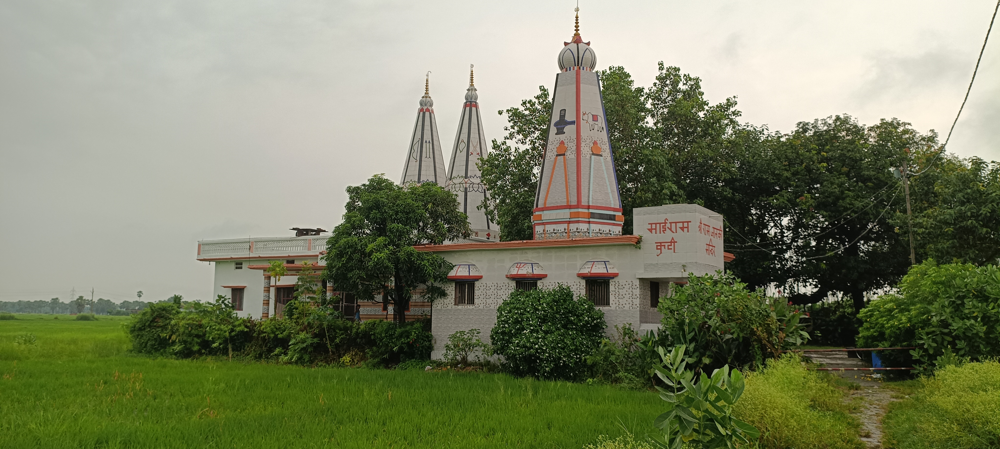
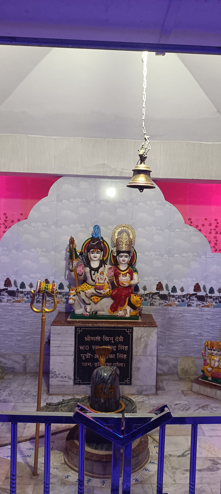
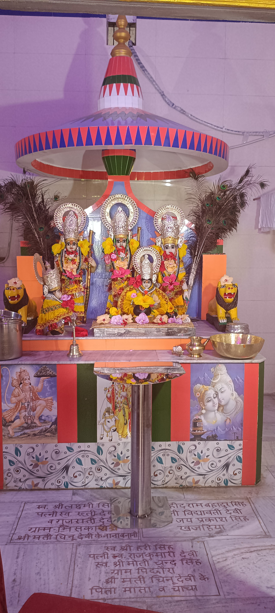
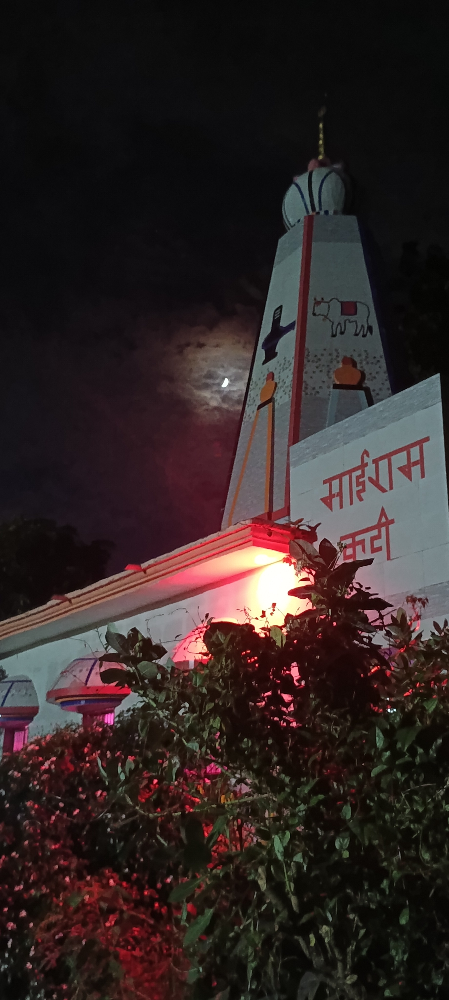
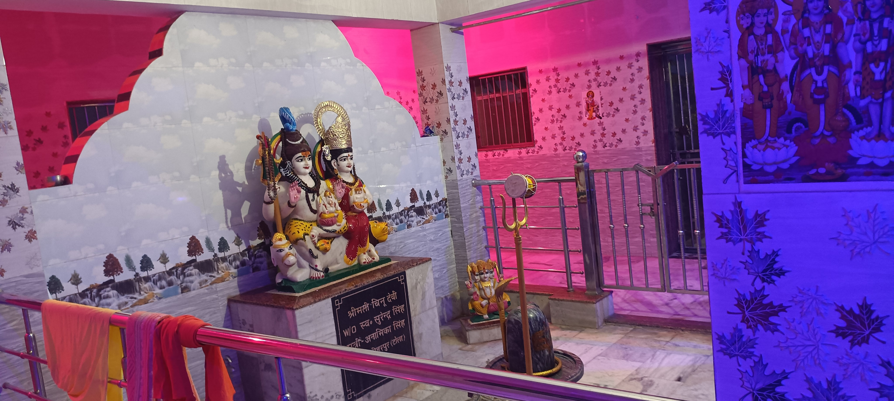
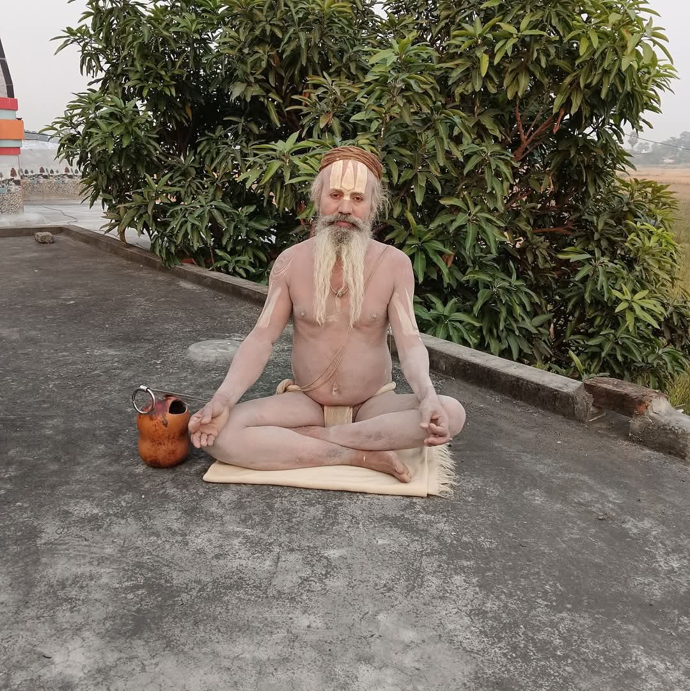
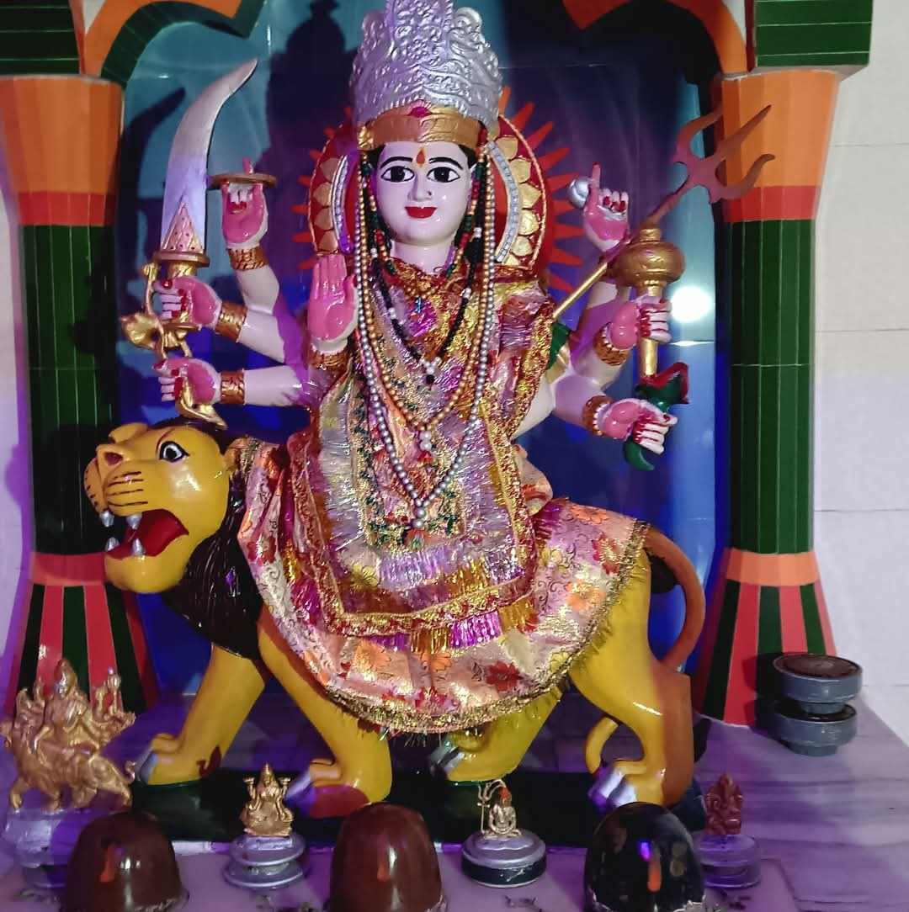
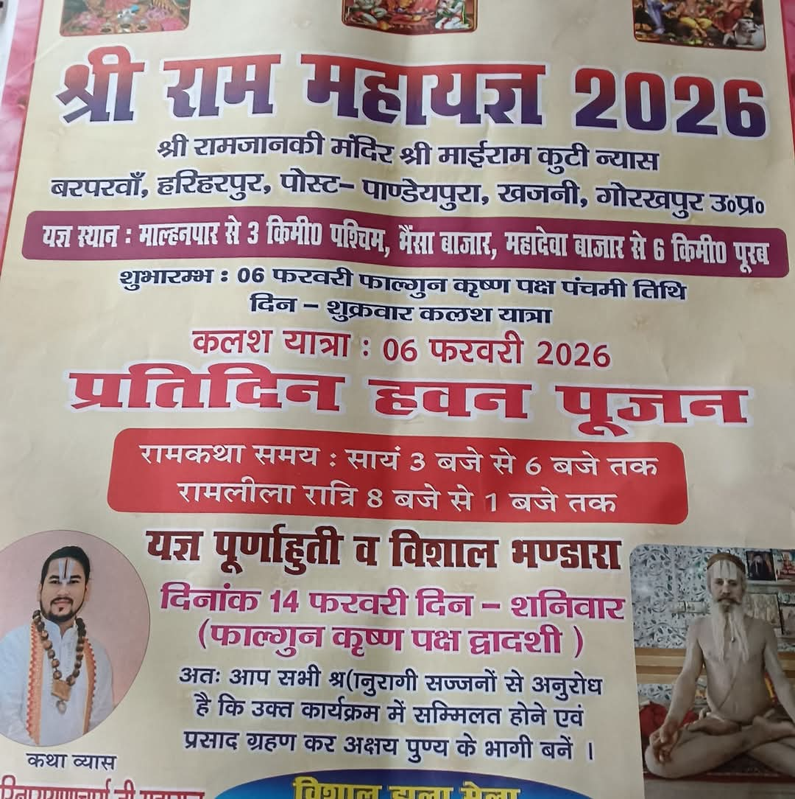

पहला पड़ाव
मुख्य द्वार
वास्तविक मंदिर की ओर प्रवेश का पहला शांत कदम।
एक शांत मन से दर्शन की शुरुआत करें
श्री राम जानकी मंदिर माई राम कुटी न्यास
बरपारवा, हरिहरपुर, गोरखपुर, उत्तर प्रदेश

यहां दिखने वाली छवियां इसी परिसर की हैं। एक शांत कदम से अगला पड़ाव खोलें।
वास्तविक मंदिर की ओर प्रवेश का पहला शांत कदम।

स्पर्श के बाद ही वास्तविक घंटी की ध्वनि चलेगी।
एक छोटी रोशनी, कुछ क्षणों का ठहराव।

फूलों को हल्के हाथ से दर्शन तक पहुँचाएँ।
मन में राम नाम रखें। यह क्षण आपका है।
द्वार खोलने के लिए बटन दबाएँ। ध्वनि आपकी अनुमति के बाद ही चलेगी।

रात का वास्तविक मंदिर दर्शनबस एक मिनट शांत होकर बैठें। सामने मंदिर का वास्तविक दृश्य रखें और मन को धीरे-धीरे स्थिर होने दें।

वास्तविक शिव परिवार दर्शनमंदिर परिसर से लिया गया यह वास्तविक चित्र श्रद्धा के साथ देखें। यहां कोई कृत्रिम या generated image नहीं है।
सभी वास्तविक तस्वीरें देखें ↗
मंदिर परिसर • वास्तविक चित्रयह वास्तविक छवि मंदिर परिसर से जुड़ी आध्यात्मिक उपस्थिति का सम्मानपूर्ण स्मरण है। फोटो में किसी प्रकार का कृत्रिम बदलाव नहीं किया गया है।
यह संख्या welcome step पूरा करके जुड़े भक्तों की है। कोई phone, email या IP सार्वजनिक नहीं होती।
सरल धार्मिक प्रश्नों के साथ मनन करें। मंदिर से जुड़े प्रश्न केवल उपलब्ध प्रमाणित जानकारी से लिए जाते हैं।
मंदिर, भक्ति संदेश और सामान्य धार्मिक जानकारी पूछें। यह सहायक भगवान होने का दावा नहीं करता।

सुप्रभात। प्रभु का नाम लेकर आज का दिन प्रेम, धैर्य और भक्ति से शुरू करें।
आज के दर्शन पर जाएं ↗आज श्री राम जानकी के दर्शन से मन में शांति और सेवा का संकल्प जगाएं।
दर्शन करें ↗मंदिर, प्रतिमाओं और बाबा के कुछ स्नेहिल दर्शन। किसी चित्र पर टैप करके उसे बड़ा देखें।
मंदिर परिसर में सहेजी गई तस्वीरों और स्मृतियों की एक शांत झलक। यहां कोई तारीख या इतिहास अनुमान से नहीं जोड़ा गया है।
कार्यक्रमों की तिथियां समिति द्वारा जोड़े जाने के बाद यहां प्रकाशित होंगी।

पोस्टरआयोजन का विस्तृत विवरण पोस्टर में देखें।
पूजा, आरती, भंडारा और धार्मिक आयोजनों की जानकारी समिति जोड़ सकती है।
जब live दर्शन उपलब्ध होंगे, समिति यहां link सक्रिय करेगी।
दर्शन के लिए आपका स्वागत है। नीचे दिए पते या Plus Code से सीधे रास्ता देखें।
G7X5+3W9, Harihar Purwa,
Uttar Pradesh 273212
मंदिर की सूचनाओं और कार्यक्रमों से जुड़े रहने के लिए भक्त समूह में आइए।
समय-सारणी समिति द्वारा जोड़ी जा सकती है। सही समय के लिए मंदिर से संपर्क करें।
मन को ठहरने का एक पल दें और भक्ति से जुड़ें।
आयोजन से जुड़ी तिथि, यात्रा और कार्यक्रम की पूरी जानकारी पोस्टर में दी गई है।
समिति द्वारा सूचना जोड़े जाने पर यह स्थान अपडेट होगा।
मंदिर सेवा से जुड़े लोगों की जानकारी समिति द्वारा सम्मानपूर्वक जोड़ी जाएगी।
Admin panel से नाम, photo और छोटा परिचय जोड़ें।
डिजिटल दर्शन में नाम लिखकर जुड़ने वाले भक्तों की सम्मानपूर्ण सूची। नाम दिखाना वैकल्पिक है।
मंदिर की सेवा एवं आवश्यक कार्यों के लिए अपना सहयोग प्रदान करें।
आपका सहयोग मंदिर की देखभाल और आवश्यक सेवाओं में सहायक होगा। भुगतान के बाद कृपया समिति को सूचित करें।
सहयोगकर्ताओं के नाम, उनकी अनुमति के अनुसार, यहां सम्मानपूर्वक दिखाए जाएंगे।